<!DOCTYPE html>
<html class="no-js" lang="es" ng-app="soc101_3">
<head>
	<meta charset="utf-8">
	<meta http-equiv="X-UA-Compatible" content="IE=edge">
	<title></title>
	<meta name="viewport" content="width=device-width, initial-scale=1">

	<link rel="stylesheet" href="../css/app.css">

    <style>

    .img-scale{
      /*transition*/
      -webkit-transition:all 0.4s;
      -moz-transition:all 0.4s;
      -o-transition:all 0.4s;
      transition:all 0.4s;
    }

    .img-scale:hover{
      /*transform*/
      -webkit-transform:scale(1.3);
      -moz-transform:scale(1.3);
      -ms-transform:scale(1.3);
      -o-transform:scale(1.3);
      transform:scale(1.3);
    }

    .icon-play-description-C3 {

        border-radius: 50%;
        border: 3px solid;
        margin-right: 10px;
        float: left;
        margin-top: 10px;
        width: 60px;
        height: 60px;
        cursor: pointer;
        
    }

            
    </style>

</head>
<body>
	<!--[if lt IE 8]>
        <p class="browsehappy">You are using an <strong>outdated</strong> browser. Please <a href="http://browsehappy.com/">upgrade your browser</a> to improve your experience.</p>
    <![endif]-->

	<!-- Solo se cambia la clase según la actividad -->
	<div id="container" class="soc" ng-include src="'../views/common/include.html'"></div>

	<!--templates-->
	<script type="text/ng-template" id="comp">
		<competences-new 
			options="data"
			audio="competences"	
		></competences-new>
	</script>

  <script type="text/ng-template" id="con1">
      <slide-show-character 
          options="data"
          title="¿Qué es la responsabilidad?"
          description="La responsabilidad es cumplir con las obligaciones y compromisos que tenemos, por ejemplo asearnos, acostarnos temprano, estudiar, cuidar el agua, no desperdiciar los alimentos."
          instruction="Haz clic sobre las flechas para ver las imágenes."
          audio="C1"
      </slide-show-character>
  </script>

  <script type="text/ng-template" id="con2">
   <transclusion
              audio="C4"
              arrow="true"
              title="Recursos que satisfacen nuestras necesidades básicas"
              description="Dentro de los recursos que satisfacen nuestras necesidades básicas tenemos:"
              instruction="Haz clic sobre cada recurso para aprender más sobre él.">

          <!--INICIO-->
         <div  style="width: 100%;height: 555px;float: left;padding-left:1%;"> 
              <div ng-repeat="item in $parent.items" class="show-concepts-tabs bg-1 center-items {{ item === $parent.selectedItem ? 'item-is-selected' : '' }}" style="margin: 10px  0 6px 10px;width: 20%;min-height: 60px;float: left;position: relative;border-radius: 5px;cursor: pointer; {{ item.complete ? item.style : '' }}" ng-click="$parent.selectItem(item)"> 
                       <p class="" style="margin: 0; text-align: center; color: #fff; font-size: 18px; padding: 5px 4px;border-radius: 5px;">
                          {{ item.text }}
                      </p>
                      <audio id="audio-{{item.audio}}" preload="auto">
                          <source src="{{ $root.resources + '/'  + item.audio + '.mp3' }}" type="audio/mpeg">
                      </audio>
                  </div>
              </div>
          </div>
          <div class="bd-1"  style="min-height: 265px;border: 3px solid;background: white;width:95%;float: left;position: absolute;display: inline-block;left: 2.5%;top: 174px;padding: 10px;">
              
              <div style="float: left;padding:5px;width: 52%;font-size:20px;" ng-bind-html="sanitize(selectedItem.content)"></div>
              <div ng-show="selectedItem"class="bd-1" style="display: inline-block; max-width: 47%;float:left;">
                
                
            </div>
          </div>

          <!-- CALIFICATIONS -->
          <div ng-show="success"> <div data-congratulations></div></div>
          <div ng-show="failure"> <div data-failure></div> </div>
          <!--FIN-->
      </transclusion>
  </script>

  <script type="text/ng-template" id="con3">
    <transclusion
            audio="C3"
            title="¿Qué pasaría sino hacemos buen uso de éstos recursos?"
            instruction="Desliza el mouse sobre cada recuadro para ver la imagen.">
    <!--INICIO-->

        <div class="show-image-hover" style="width: 100%;float: left;margin-top: 20px;margin-left: 0px;display: inline-block">

            <div ng-repeat="item in items" ng-mouseover="$parent.selectItem(item)" class="bd-1 {{ item === $parent.selectedItem ? 'bd-2' : '' }}" style="min-height:330px;cursor: pointer;color: white!important;width: 24%;float: left;margin-top: 0px;margin-right: 5px;margin-left: 5px;border: 3px solid;display: inline-block;"><div class="bg-1 {{ item === $parent.selectedItem ? 'bg-2' : '' }}" style="float: left; width: 100%;height: 30px;text-align: center;line-height: 30px;font-size: 20px;color: white!important;">{{ item.title }}</div><div  ng-hide="item === $parent.selectedItem" class="fc-1" style="float: left; width: 100%;height: 100px;font-size: 23px;padding: 0 10px 0 10px;display: inline-table;" ng-bind-html="sanitize(item.text)"></div></div>

        </div>

        <!-- CALIFICATIONS -->
        <div ng-show="success"> <div data-congratulations></div> </div>
        <div ng-show="failure"> <div data-failure></div> </div>
    <!--FIN-->
      </transclusion>
  </script>

  <script type="text/ng-template" id="con4">
      <text1
      block=true
      float="right"
      description='<div class="bg-1 message-box-L" style="padding: 20px;color: white;"><strong style="color: white;">¿Qué son los recursos naturales?</strong><br><br>Los recursos naturales son aquellos que nos brinda la naturaleza sin necesidad de que el hombre los haya modificado;  por ejemplo:  el agua,  el aire,  la madera, el  petróleo, el carbón,  los diamantes, las esmeraldas.</div>'
          img="nino.png"
          alt="Niño excursionistas, hablando sobre la justicia y su importancia." audio="C4">
      </text1>
  </script>  

  <script type="text/ng-template" id="con5">
    <transclusion 
      audio="C5"
      description="Los recursos naturales tienen una gran importancia para los seres humanos, ya que éstos contribuyen a su bienestar."
      <!--INICIO-->
        <div style="text-align: center">
          
          <div style="display: inline-block;width: 100%;float:left;font-size: 20px;text-align: center;" >
            <div style="display: inline-block;width: 100%;float:left;font-size: 20px;margin-left: 0px;margin-bottom: 50px;text-align: center;" >Los recursos naturales se pueden transformar obteniendo otros productos tales como:</div>
            <div class=" border-3px bd-1" style="width: 23%;float: left;margin: 1%;" ng-repeat="item in items">
              
              <div class="wid-100 bg-1" style='padding: 10px;display: inline-block;color: white;font-size: 20px;'>{{ item.text }}</div>
            </div>
          </div>
        </div>
      <!--FIN-->
    </transclusion>
  </script>

  <script type="text/ng-template" id="con6">
    <transclusion 
      audio="C6"
      <!--INICIO-->
      <div style="text-align: center">
        <div style="display: inline-block;width: 100%;float:left;font-size: 20px;margin-left: 0px;" >
          <div class="" style="width: 31%;float: left;margin: 10px;" ng-repeat="item in items">
            
          </div>
          <div style="text-align:left;padding-left:20px;display: inline-block; max-width: 65%;float:left;font-size: 20px;margin-left: 0px;margin-bottom: 20px;" ><strong>Explotación responsable de los recursos naturales:</strong><br><br>Los recursos naturales deben ser usados cuidadosamente,  para no agotarlos. Cuando los recursos naturales se utilizan se dice que están siendo explotados.</div>
          <div class="bg-1 col-md-3 fc-W" style="padding: 10px;margin:20px;">Recuerda que...</div>   
          <div style="text-align:left;padding-left:20px;display: inline-block; max-width: 65%;float:left;font-size: 20px;margin-left: 0px;margin-bottom: 50px;" >Los recursos se deben explotar de forma responsable, ya que son limitados y si no los cuidas pueden acabarse.<br><br>A continuación verás la manera en la que puedes usar los recursos naturales responsablemente.</div>
        </div>
      </div>
      <!--FIN-->
    </transclusion>
  </script>

  <script type="text/ng-template" id="con7">
      <slide-show-character 
          options="data"
          title="Explotación a través de la tala de árboles"
          description="De los árboles se saca la madera, la cual es utilizada en la fabricación de muchos productos, por ejemplo: viviendas, utensilios de cocina, papel, muebles, entre otros."
          instruction="Haz clic sobre las flechas para ver las imágenes."
          audio="C7"
      </slide-show-character>
  </script>

  <script type="text/ng-template" id="con8">
        <transclusion 
          audio="C8"
          title="Explotación del agua"
          <!--INICIO-->
          <div style="text-align: center">
            <div style="display: inline-block;width:100%;float:left;font-size: 20px;text-align: center;" >
              <div style="display: inline-block; max-width: 100%;float:left;font-size: 20px;margin-left: 0px;margin-bottom: 20px;text-align: -webkit-auto;" >El agua es un recurso vital para que haya vida en nuestro planeta. Todos los seres vivos necesitamos del agua. Por esta razón es importante darle un uso adecuado, cerrando la llave para no desperdiciarla.</div>
              <div class=" border-3px bd-1" style="width: 35%;float: left;margin: 0 7% 0 7%;" ng-repeat="item in items">
                
                <div class="wid-100 bg-1" style='padding: 10px;display: inline-block;color: white;font-size: 20px;'>{{ item.text }}</div>
              </div>
            </div>
          </div>
          <!--FIN-->
        </transclusion>
      </script>

  <script type="text/ng-template" id="con9">
    <transclusion 
      audio="C9"
      title="Explotación de minerales: el oro"
      <!--INICIO-->
      <div style="text-align: center">
        <div style="display: inline-block;width:100%;float:left;font-size: 20px;text-align: center;" >
          <div style="display: inline-block; max-width: 100%;float:left;font-size: 20px;margin-left: 0px;margin-bottom: 20px;text-align: -webkit-auto;" >Es un recurso natural costoso, es muy utilizado en la elaboración de hermosas joyas y como conductor de la electricidad. La explotación de este recurso acaba con la tierra, ya que para hallarlo se requiere hacer grandes excavaciones.</div>
          <div class=" border-3px bd-1" style="width: 30%;float: left;margin: 0 10% 0 10%;" ng-repeat="item in items">
            
            <div class="wid-100 bg-1" style='padding: 10px;display: inline-block;color: white;font-size: 20px;'>{{ item.text }}</div>
          </div>
        </div>
      </div>
      <!--FIN-->
    </transclusion>
  </script>

  <script type="text/ng-template" id="con10">
    <transclusion 
      audio="C10"
      <!--INICIO-->
      <div style="text-align: center">
        <div style="display: inline-block;width:100%;float:left;font-size: 20px;text-align: center;" >
          <div style="display: inline-block; max-width: 60%;float:left;font-size: 20px;margin-left: 0px;margin-bottom: 20px;text-align: -webkit-auto;" ><strong>Explotación del petróleo</strong><br><br>El petróleo es un recurso natural costoso,  se transforma en otros elementos como los combustibles (gasolina); cuando no se explota adecuadamente puede haber derrames que contaminan el ambiente. La mejor forma de explotarlo es mediante plataformas petroleras.</div>
          <div class=" border-3px bd-1" style="width: 30%;float: left;margin-left:5%;" ng-repeat="item in items">
            
            <div class="wid-100 bg-1" style='padding: 10px;display: inline-block;color: white;font-size: 20px;'>{{ item.text }}</div>
          </div>
        </div>
      </div>
      <!--FIN-->
    </transclusion>
  </script>

  <script type="text/ng-template" id="act1">
    <show-name 
      options="data"
      description="Haz clic sobre  el ícono de sonido y escucha cada emoción que caracteriza a las  personas."
      audio="A1"></show-name>
  </script>

  <script type="text/ng-template" id="act1-2">
    <show-name 
      options="data"
      description="Haz clic sobre  el ícono de sonido y escucha cada emoción que caracteriza a las  personas."
      audio="A1-2"></show-name>
  </script>

  <script type="text/ng-template" id="act2">
      <pairs options="options" audio="A2" description="Arrastra cada imagen de la parte superior hasta cada imagen inferior que representa las consecuencias  de no usar responsablemente los recursos básicos.">
          <item>
              
              <h1 class='bg-1 fc-W wid-100' data-bind="html: text2"></h1>
          </item>
          <target>
              
              <h1 class='bg-1 fc-W wid-100' data-bind="html: text"></h1>
          </target>
      </pairs>
  </script>

    <script type="text/ng-template" id="act3">
     <select-options-positions options="options" description="Observa las imágenes y luego selecciona si representan un uso responsable o no de los recursos." audio="A3"> </select-options-positions>
    </script>

  <script type="text/ng-template" id="act4">
    <puzzle3 
      options="data"
      audio="A4"
      description="Arrastra cada pieza del rompecabezas al lugar correspondiente y descubre la imagen donde se representa el uso responsable de los recursos.">
    </puzzle3>
  </script>
	
  <script type="text/ng-template" id="act5">
    <pairs options="options" audio="A5" description="Arrastra cada imagen de la parte superior  hasta la imagen inferior que indica el uso responsable para cada explotación del recurso.">
        <item>
            
            <h1 class='bg-1 fc-W wid-100' data-bind="html: text2"></h1>
        </item>
        <target>
            
            <h1 class='bg-1 fc-W wid-100' data-bind="html: text"></h1>
        </target>
    </pairs>
  </script>

  <script type="text/ng-template" id="act6">
      <select-checkbox
              audio="A6"
              options="data">
      </select-checkbox>
  </script>

  <script type="text/ng-template" id="act7">
    <pairs options="options" audio="A7" description="Arrastra cada imagen que representa un uso responsable de los recursos básicos hacia el enunciado con el cual guarda relación.">
        <item>
            
        </item>
        <target>
            <h1 class='bg-1 fc-W wid-100' data-bind="html: sil"></h1>
        </target>
        <item-target>
          
        </item-target>
    </pairs>
  </script>

	<script src="../scripts/vendor.js"></script>
	<script src="../scripts/app.js"></script>

	<script>
		// Requerido para activar el autoreload
		window.brunch = window.brunch || {};
	</script>

</body>
</html>

